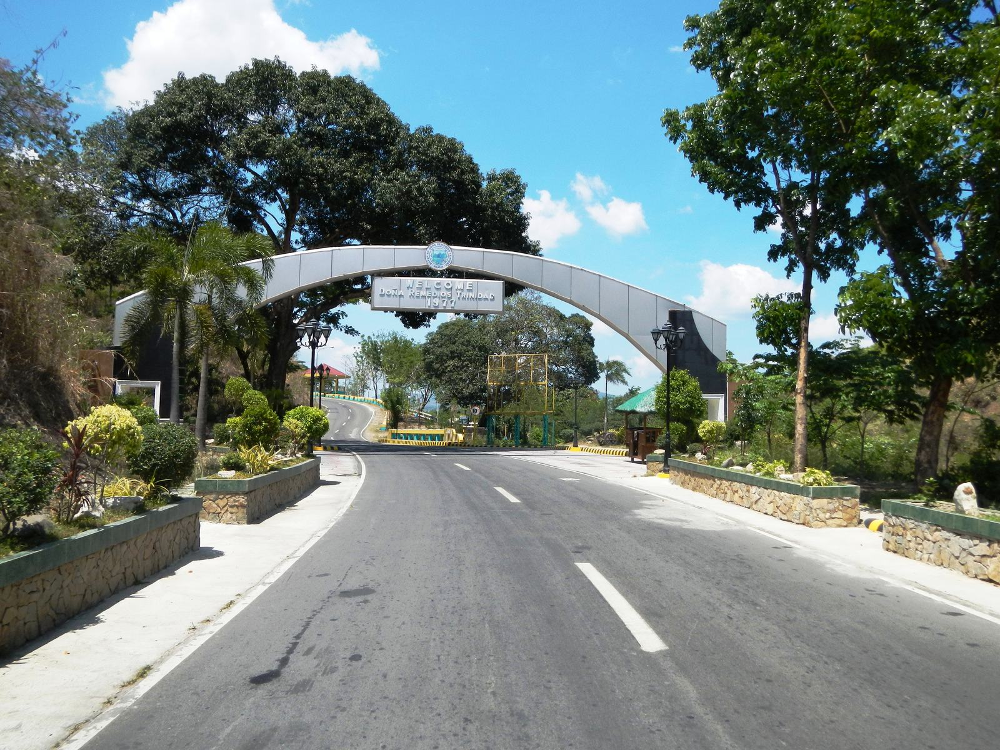

Bulacan's hidden paradise of nature & adventure
Three-quarters forest, laced with rivers and hidden falls - a two-hour escape from Manila into caves, mountain trails, and waterfalls this guide brings together in one place.
Gallery
DRT's 8 barangays each guard their own falls, caves, and viewpoints. Pick one to see what's there.
A full day, several stops, one loop from the town center — pick a circuit to see the route, what to bring, and where to sleep.
Tap any spot for its full details - location, fees, hours, activities, and how to get there.
A full day, several stops, one loop from the town center — pick a circuit to see the route, what to bring, and where to sleep.
Select a destination below to center the map on it and see its distance from the town center.
Doña Remedios Trinidad (DRT) is the largest municipality in Bulacan, mostly forest and mountain terrain along the Sierra Madre. It is home to eight barangays, each guarding its own waterfalls, caves, or viewpoints, with local guides available in every area.
Municipal Hall, Barangay Pulong Sampalok, Doña Remedios Trinidad, Bulacan
Open Monday-Friday, 8:00 AM - 5:00 PM · Trek registration also available on weekends at barangay tourism desks.